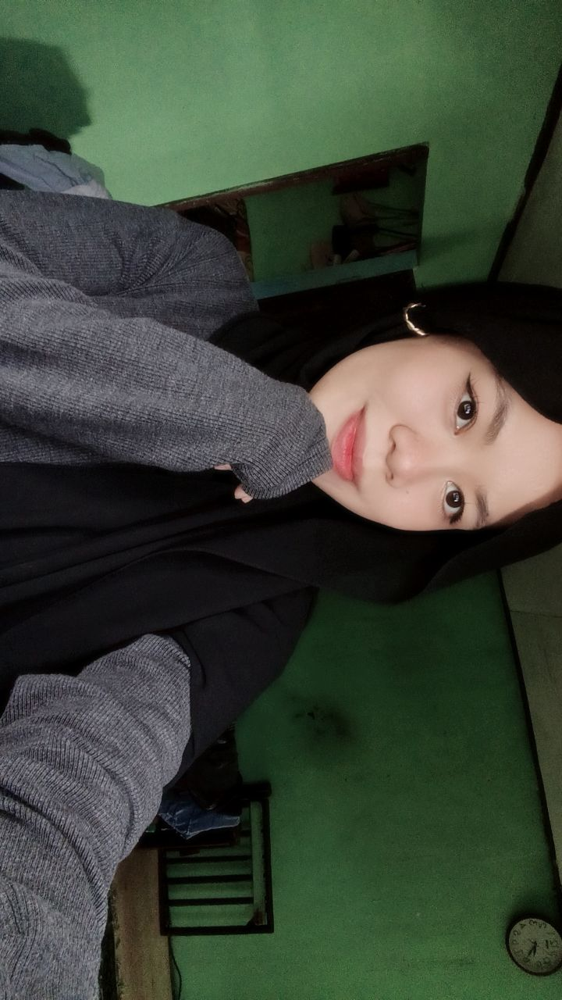

Anis Nurani
Grow at Your Own Pace
🎂
Bday:
Cianjur,23 Juli 2005 💕
✨
Zodiak:
Leo 🦁
🎨
Hobi:
Memasak&mendengarkan lagu🍳🎶
☕
Fav Food:
Semua Tentang Matcha! ‧₊˚ 🍵 ⋅
📸 Instagram
🎵 TikTok
📘 Facebook
💬 Chat WhatsApp Me
🧑🏻 Chat My Favorite Person💕